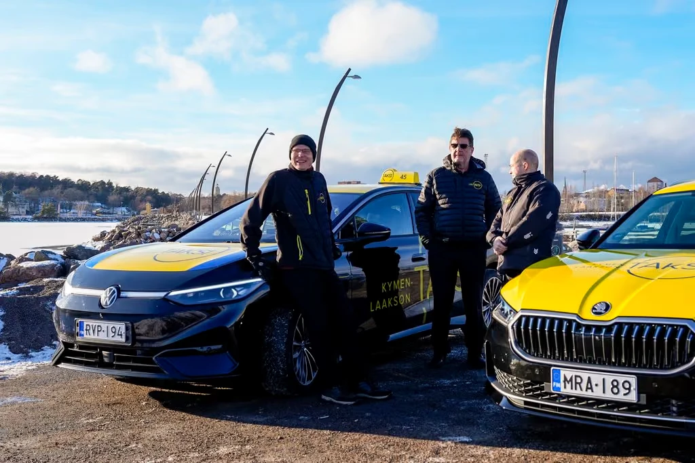

Tule töihin meille
Kymenlaakson Taksilla on aina tilaa uusille päteville yrittäjille ja kuljettajille kaikenlaisista ikäluokista ja elämäntilanteista. Työn etuina ovat hyvä palkka, työn monipuolisuus ja vapaus.
Haemme juuri nyt
Ladataan avoimia työpaikkoja…
Kaikki uudet tulokkaat perehdytetään yhtiön toimintamalliin heti työsuhteen alussa. Jokainen yrittäjäksi ja kuljettajaksi tuleva käy läpi Kymenlaakson Taksin oman koulutuksen, josta saa perustiedot yhtiön toiminnasta, käytössä olevista järjestelmistä ja brändistä.
Työnäkymät taksialalla ovat hyvät, ja Kymenlaakson Taksin alueellinen tunnettuus pitää asiakasvirran tasaisena. Kun on valmis ajamaan vaihtelevia vuoroja ja erilaisia tilauksia, riittää keikkoja niin paljon kuin vain haluaa tehdä.
Kymenlaakson Taksin välityspalvelu tarjoaa paljon etuja
- Yhteiset modernit järjestelmät ja taksamittarit
- Keikkojen tarjoaminen suoraan autoon
- Brändin tunnettuuden ja valmiin markkinoinnin
- Yhtiön oman laite- ja IT-tuen
- Yhtiön oman paikallisen välityskeskuksen
- Yhteisöllisen porukan ja kollegoiden tuen
Taksinvälittäjä keskukseen
Etsimme aika ajoin välittäjiä tilauskeskukseen täysiaikaiseen ja osa-aikaiseen työsuhteeseen. Voit hakea avoimella hakemuksella.
Taksinvälittäjän tehtävässä vastaanotat asiakkaiden taksitilauksia puhelimitse ja eri kanavista. Tehtävässä vaaditaan asiakaspalvelutaitoja ja tarkkuutta. Edellytämme hyviä it-taitoja sekä sujuvaa suomen kielen taitoa. Kykenet työskentelemään itsenäisesti kuitenkin ollen osa tiimiä.
Tarjoamme vaihtelevan työn erilaisten taksinvälitykseen liittyvien työtehtävien parissa. Työ on kolmivuorotyötä. Palkkaus TES:in mukaan, autoliikennealojen toimihenkilöiden työehtosopimus.
Meillä pääset osaksi osaavaa ja moninaista mukavaa työporukkaa!
Lähetä avoin hakemusKuljettajaksi
Kymenlaakson Taksin väreissä voi toimia kuljettajana ilman, että perustaa omaa yritystä. Tällöin aiempaa kokemusta taksialalla toimimisesta ei tarvita – taskussa on oltava vain vähintään B-kortti, hallussa hyvä ajotaito ja luonteessa itseohjautuvuutta!
Kattava koulutus. Kymenlaakson Taksin omassa koulutuksessa uusi kuljettaja perehdytetään mm. seuraaviin asioihin: taksilaitteisto ja maksupääte sekä niiden käyttö, brändi, palvelun laatu ja asiakaspalvelu, erilaiset asiakasryhmät ja palvelutilanteet sekä seututuntemus. Lisäksi uusille kuljettajille järjestetään Trafin hyväksymä taksiliikenteen erityisryhmien kuljettajakoulutus, joka on kaikille taksikuljettajille pakollinen 1.1.2024 alkaen.
Työaika ja palkkaus. Työaika on kuljettajan ja taksiyrittäjän sovittavissa. Palkkaus koostuu suurilta osin provisiopalkasta, eli keikkojen määrästä. Korvauksen sopivat kuljettaja ja yrittäjä. Halutessaan töitä voi tehdä niin paljon kuin haluaa tieliikennelain asettamissa aikarajoissa, mutta jo esimerkiksi 38 tuntisella työviikolla tienaa hyvin. Töitä voi tehdä osa- tai kokoaikaisesti.
Hae kuljettajakurssilleYrittäjäksi
Kymenlaakson Taksi on välityspalvelu, joka tekee yhteistyötä paikallisten taksiyrittäjien kanssa. Suosittelemme, että taksiyrittäjä olisi toiminut jo jonkin aikaa kuljettajana ennen yrittäjäksi ryhtymistä – tämä palvelee ensisijaisesti yrittäjää itseään!
Luvat ja koulutus. Aloittavan yrittäjän on ensin perustettava oma yritys. Tämän jälkeen on hankittava Trafilta taksiliikennelupa yritykselle ja taksinkuljettajan lupa. Kun lupa-asiat ovat Trafin kanssa kunnossa, tulee yrittäjän hakeutua Kymenlaakson Taksin omaan koulutukseen, jossa perehdytetään eritoten yhtiön väreissä ja Kymenlaakson alueella toimimiseen. Kymenlaakson Taksin välityspalveluun liittymisestä peritään liittymismaksu.
Kaluston hankinta. Yrittäjän on hankittava itselleen kalusto. Kymenlaakson Taksi vaatii turvallisuus- ja asiakasmukavuussyistä yrittäjiltään korkeintaan neljä vuotta vanhoja autoja, joissa on vähintään neljä ovea. Autot voivat olla polttomoottori-, sähkö- tai hybridiajoneuvoja. Merkillä ei ole väliä, mutta brändin mukaisesti värin tulisi olla musta tai valkoinen.
Vakuutukset. Kymenlaakson Taksi tarjoaa yrittäjilleen yhteistä räätälöityä ammattiliikennevakuutusta yhteistyössä oman vakuutusyhtiönsä kanssa, mutta halutessaan yrittäjä voi ottaa oman yrityskohtaisen vakuutuksensa haluamastaan vakuutusyhtiöstä.
Brändi. Sekä aloittavien että kokeneiden taksiyrittäjien kalusto teipataan Kymenlaakson Taksin mukaisesti. Teippaukset maksaa yrittäjä.
Hae yrittäjäksi / ilmoita kaluston lisäysTilaa taksi apilla ilmaiseksi
tai soittamalla 0100 87227 (1,54 € puhelu + 0,81 € / min + pvm)